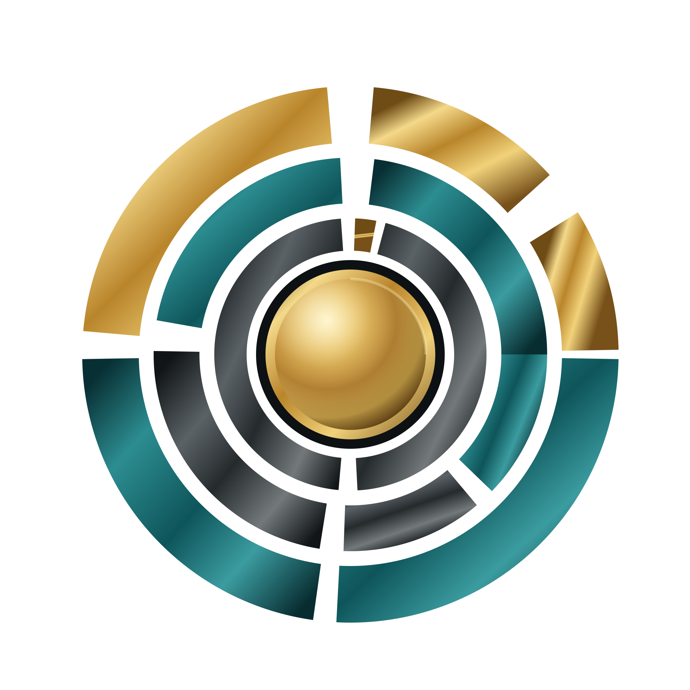

TonaqueSpace
The public gateway and environment where Tonaque’s technology systems, products, research and talent pathways come together.
Approved identity · active ecosystemThe technology ecosystem of Tonaque
TonaqueSpace brings together the organisation that engineers the future, the operating core beneath it and the products, experiments and people moving it forward.

Ecosystem architecture
Each identity has a distinct job. Together they form a coherent technology ecosystem rather than a collection of unrelated brands.
The public gateway and environment where Tonaque’s technology systems, products, research and talent pathways come together.
Approved identity · active ecosystemThe intelligence, engineering and systems organisation responsible for turning strategy into real technical capability.
Approved identity direction · implementation phaseThe shared enterprise operating foundation connecting specialised SmartApps, operational data and embedded intelligence.
Platform and SmartApps in developmentProducts
The inaugural SmartApp portfolio is entering development. Status is shown honestly; this is a development portfolio, not a claim of released software.
Invoice creation, delivery and payment visibility.
Inventory movement, availability and control.
Connected sales and point-of-service operations.
Payroll workflows and workforce payment records.
People records, workflows and operational visibility.
Customer relationships, activity and opportunity tracking.
Business spending capture, review and control.
Availability, appointments and service scheduling.
Delivery planning, ownership and progress visibility.
Purchasing requests, suppliers and procurement workflows.
TonaqueSpace Labs
Labs is where prototypes, applied research and future technical concepts can be investigated without pretending that every experiment is already a product.
Research emerging opportunities and difficult operational problems.
Build bounded experiments that can be observed and tested.
Promote only the work that survives evidence, feasibility and commercial scrutiny.
University talent programme
A structured pathway for selected university students and emerging professionals to learn through genuine engineering responsibility, disciplined review and production work.
Partners
TonaqueSpace is preparing pathways for universities, technology collaborators and commercial partners. No partnership is implied until it is formally established.
Talent development, attachments and applied learning.
Infrastructure, platforms and specialist capability.
Real operational problems, pilots and product validation.